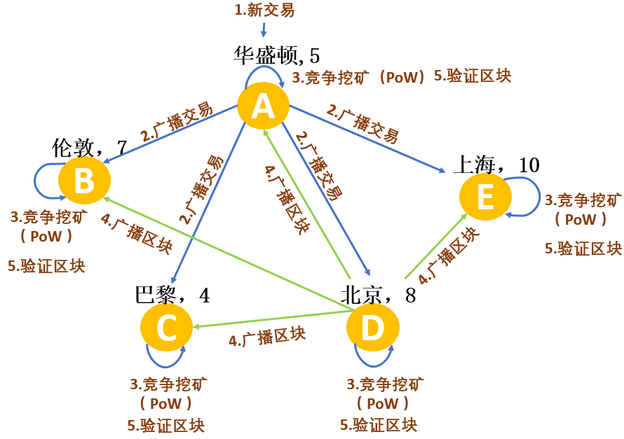
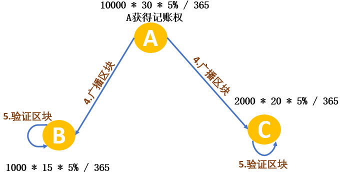
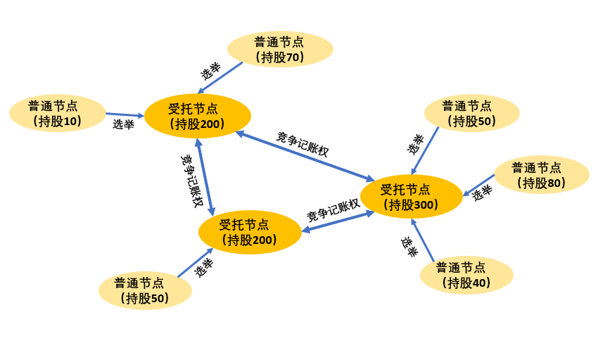
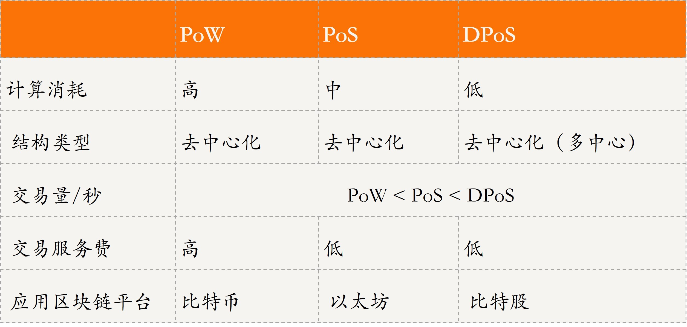
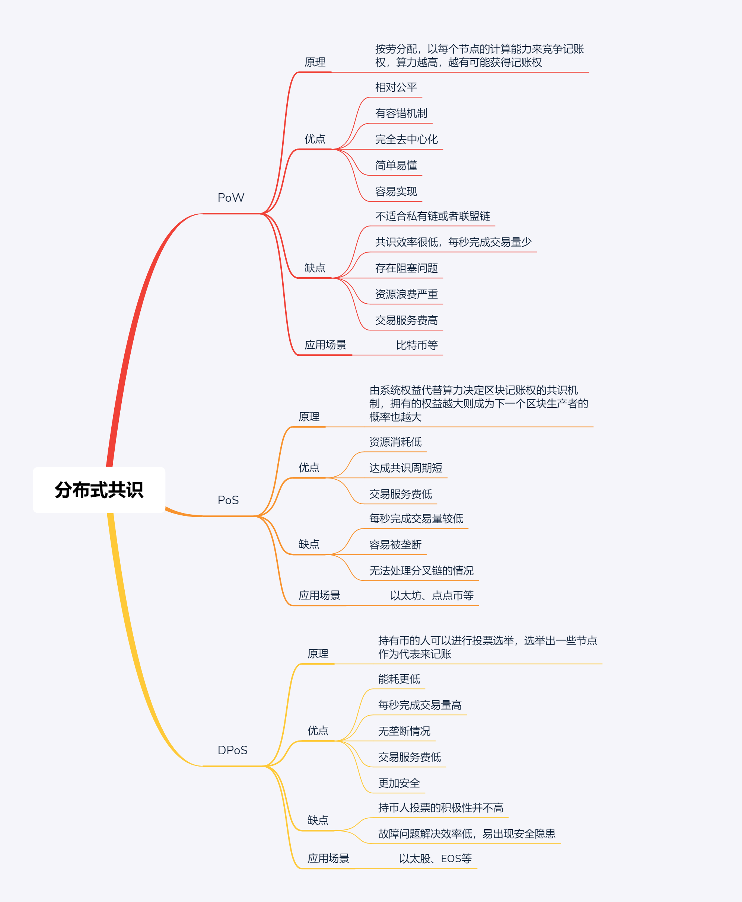

- 00 开篇词 四纵四横，带你透彻理解分布式技术.md.html
- 01 分布式缘何而起：从单兵，到游击队，到集团军.md.html
- 02 分布式系统的指标：啥是分布式的三围.md.html
- 03 分布式互斥：有你没我，有我没你.md.html
- 04 分布式选举：国不可一日无君.md.html
- 05 分布式共识：存异求同.md.html
- 06 分布式事务：All or nothing.md.html
- 07 分布式锁：关键重地，非请勿入.md.html
- 08 分布式技术是如何引爆人工智能的？.md.html
- 09 分布式体系结构之集中式结构：一人在上，万人在下.md.html
- 10 分布式体系结构之非集中式结构：众生平等.md.html
- 11 分布式调度架构之单体调度：物质文明、精神文明一手抓.md.html
- 12 分布式调度架构之两层调度：物质文明、精神文明两手抓.md.html
- 13 分布式调度架构之共享状态调度：物质文明、精神文明多手协商抓.md.html
- 14 答疑篇：分布式事务与分布式锁相关问题.md.html
- 15 分布式计算模式之MR：一门同流合污的艺术.md.html
- 16 分布式计算模式之Stream：一门背锅的艺术.md.html
- 17 分布式计算模式之Actor：一门甩锅的艺术.md.html
- 18 分布式计算模式之流水线：你方唱罢我登场.md.html
- 19 分布式通信之远程调用：我是你的千里眼.md.html
- 20 分布式通信之发布订阅：送货上门.md.html
- 21 分布式通信之消息队列：货物自取.md.html
- 22 答疑篇：分布式体系架构与分布式计算相关问题.md.html
- 23 CAP理论：这顶帽子我不想要.md.html
- 24 分布式数据存储系统之三要素：顾客、导购与货架.md.html
- 25 数据分布方式之哈希与一致性哈希：“掐指一算”与“掐指两算”的事.md.html
- 26 分布式数据复制技术：分身有术.md.html
- 27 分布式数据之缓存技术：“身手钥钱”随身带.md.html
- 28 分布式高可靠之负载均衡：不患寡，而患不均.md.html
- 29 分布式高可靠之流量控制：大禹治水，在疏不在堵.md.html
- 30 分布式高可用之故障隔离：当断不断，反受其乱.md.html
- 31 分布式高可用之故障恢复：知错能改，善莫大焉.md.html
- 32 答疑篇：如何判断并解决网络分区问题？.md.html
- 33 知识串联：以购买火车票的流程串联分布式核心技术.md.html
- 34 搭建一个分布式实验环境：纸上得来终觉浅，绝知此事要躬行.md.html
- 特别放送 Jackey：寄语天涯客，轻寒底用愁.md.html
- 特别放送 分布式下的一致性杂谈.md.html
- 特别放送 崔新：追根溯源，拨开云雾见青天.md.html
- 特别放送 徐志强：学习这件事儿，不到长城非好汉.md.html
- 特别放送 那些你不能错过的分布式系统论文.md.html
- 结束语 为什么说提升职业竞争力要从尊重、诚实开始？.md.html
- 捐赠
05 分布式共识：存异求同
你好，我是聂鹏程。今天，我来继续带你打卡分布式核心技术。
首先，我们来回忆下上篇文章的分布式选举。分布式选举问题，是从多个节点中选出一个主节点，相关的选举方法几乎都有一个共同特点：每个节点都有选举权和被选举权。大部分选举方法采用多数策略，也就是说一个节点只有得到了大部分节点的同意或认可才能成为主节点，然后主节点向其他节点宣告主权。
其实，这个选主过程就是一个分布式共识问题，因为每个节点在选出主节点之前都可以认为自己会成为主节点，也就是说集群节点“存异”；而通过选举的过程选出主节点，让所有的节点都认可该主节点，这叫“求同”。由此可见，分布式共识的本质就是“存异求同”。
所以，从本质上看，分布式选举问题，其实就是传统的分布式共识方法，主要是基于多数投票策略实现的。基于多数投票策略的分布式选举方法，如果用于分布式在线记账一致性问题中，那么记账权通常会完全掌握到主节点的手里，这使得主节点非常容易造假，且存在性能瓶颈。因此，分布式选举不适用于分布式在线记账的一致性问题。在今天这篇文章中，我就带你了解另外一种用于解决分布式在线记账一致性问题的分布式共识技术。
这里所说的分布式在线记账，是指在没有集中的发行方，也就是没有银行参与的情况下，任意一台接入互联网的电脑都能参与买卖，所有看到该交易的服务器都可以记录这笔交易，并且记录信息最终都是一致的，以保证交易的准确性。而如何保证交易的一致性，就是该场景下的分布式共识问题。
接下来，我们就一起学习下分布式共识技术吧。
什么是分布式共识？
假设，现在有5台服务器，分散在美国华盛顿、英国伦敦、法国巴黎、中国北京、中国上海，分别对应着用户{A,B,C,D,E}。现在，用户A给用户B转了100元。
在传统方法中，我们通过银行进行转账并记录该笔交易。但分布式在线记账方法中，没有银行这样的一个集中方，而是由上述5台服务器来记录该笔交易。但是，这5台服务器均是有各自想法的个体，都可以自主操作或记录，那么如何保证记录的交易是一致的呢？这，就是分布式共识技术要解决的问题。
可以看出，分布式共识就是在多个节点均可独自操作或记录的情况下，使得所有节点针对某个状态达成一致的过程。通过共识机制，我们可以使得分布式系统中的多个节点的数据达成一致。
看到这里，相信你已经看出来了，我在这里说的分布式在线记账，就是近几年比较火的区块链技术解决的问题。而分布式共识技术，就是区块链技术共识机制的核心。
接下来，请和我一起看看分布式共识是如何实现的，有哪些方法吧。
分布式共识方法
为了不影响你理解分布式共识的核心技术，我会先和你分享区块链中的一个核心概念：挖矿。
在传统的交易方式中，用户A给用户B转账，需要银行来实行具体的转账操作并记录交易，银行会从中收取相应的手续费。而采用分布式在线记账的话，参与记录这笔交易的服务器，也可以从中获得一些奖励（这些奖励，在区块链技术中可以换成钱）。所有服务器帮助记录交易并达成一致的过程，就是区块链中的“挖矿”。
区块链是一种链式数据结构，由包含交易信息的区块通过哈希指针、根据时间顺序连接而成，也是一种分布式数据库。区块是区块链的主要组成部分，每个区块由区块头和区块内容数据构成。区块头记录了时间戳，并用于保证区块链的连接性；区块内容数据中包含了多条交易信息。如果你对区块链技术的其他概念感兴趣的话，可以自行查阅更多资料。
接下来，我将与你介绍3种主流的解决分布式在线记账一致性问题的共识技术，即：PoW（Proof-of-Work，工作量证明）、PoS（Proof-of-Stake，权益证明）和DPoS（Delegated Proof of Stake，委托权益证明）。
PoW
从分布式选举问题可以看出，同一轮选举中有且仅有一个节点成为主节点。同理，在分布式在线记账问题中，针对同一笔交易，有且仅有一个节点或服务器可以获得记账权，然后其他节点或服务器同意该节点或服务器的记账结果，达成一致。
也就是说，分布式共识包括两个关键点，获得记账权和所有节点或服务器达成一致。
PoW算法，是以每个节点或服务器的计算能力（即“算力”）来竞争记账权的机制，因此是一种使用工作量证明机制的共识算法。也就是说，谁的计算力强、工作能力强，谁获得记账权的可能性就越大。
那么，如何体现节点的“算力”呢？答案就是，每个节点都去解一道题，谁能先解决谁的能力就强。
假设每个节点会划分多个区块用于记录用户交易，PoW算法获取记账权的原理是：利用区块的index、前一个区块的哈希值、交易的时间戳、区块数据和nonce值，通过SHA256哈希算法计算出一个哈希值，并判断前k个值是否都为0。如果不是，则递增nonce值，重新按照上述方法计算；如果是，则本次计算的哈希值为要解决的题目的正确答案。谁最先计算出正确答案，谁就获得这个区块的记账权。
请注意：nonce值是用来找到一个满足哈希值的数字；k为哈希值前导零的个数，标记了计算的难度，0越多计算难度越大。
达成共识的过程，就是获得记账权的节点将该区块信息广播给其他节点，其他节点判断该节点找到的区块中的所有交易都是有效且之前未存在过的，则认为该区块有效，并接受该区块，达成一致。
接下来，我以上文提到的分散在世界各地的5台服务器为例，和你说明基于PoW的共识记账过程。
假设客户端A产生一个新的交易，基于PoW的共识记账过程为：
- 客户端A产生新的交易，向全网进行广播，要求对交易进行记账。
- 每个记账节点接收到这个请求后，将收到的交易信息放入一个区块中。
- 每个节点通过PoW算法，计算本节点的区块的哈希值，尝试找到一个具有足够工作量难度的工作量证明。

- 若节点D找到了一个工作量证明向全网广播。当然，当且仅当包含在该区块中的交易都是有效且之前未存在过的，其他节点才会认同该区块的有效性。
- 其他节点接收到广播信息后，若该区块有效，接受该区块，并跟随在该区块的末尾，制造新区块延长该链条，将被接受的区块的随机哈希值视为新区块的随机哈希值。
可以看出，PoW算法中，谁的计算能力强，获得记账权的可能性就越大。但必须保证其记账的区块是有效的，并在之前未存在过，才能获得其他节点的认可。
目前，比特币平台采用了PoW算法，属于区块链1.0阶段，其重心在于货币，比特币大约10min 才会产生一个区块，区块的大小也只有 1MB，仅能够包含 3000～4000 笔交易，平均每秒只能够处理 5~7（个位数）笔交易。
PoW通过“挖矿”的方式发行新币，把比特币分散给个人，实现了相对的公平。PoW的容错机制，允许全网50%的节点出错，因此，如果要破坏系统，则需要投入极大成本（若你有全球51%的算力，则可尝试攻击比特币）。
但，PoW机制每次达成共识需要全网共同参与运算，增加了每个节点的计算量，并且如果题目过难，会导致计算时间长、资源消耗多；而如果题目过于简单，会导致大量节点同时获得记账权，冲突多。这些问题，都会增加达成共识的时间。
所以，PoW机制的缺点也很明显，共识达成的周期长、效率低，资源消耗大。
PoS
为了解决PoW算法的问题，引入了PoS算法。它的核心原理是，由系统权益代替算力来决定区块记账权，拥有的权益越大获得记账权的概率就越大。
这里所谓的权益，就是每个节点占有货币的数量和时间，而货币就是节点所获得的奖励。PoS算法充分利用了分布式在线记账中的奖励，鼓励“利滚利”。
在股权证明PoS模式下，根据你持有货币的数量和时间，给你发利息。每个币每天产生1币龄，比如你持有100个币，总共持有了50天，那么，你的币龄就为5000。这个时候，如果你发现了一个PoS区块，你的币龄就会被减少365。每被减少365币龄，你就可以从区块中获得0.05个币的利息(可理解为年利率5%)。
在这个案例中，利息 = （5000*5% ）/365 = 0.68个币。这下就有意思了，持币有利息。
基于PoS算法获得区块记账权的方法与基于PoW的方法类似，不同之处在于：节点计算获取记账权的方法不一样，PoW是利用区块的index、前一个区块的哈希值、交易的时间戳、区块数据和nonce值，通过SHA256哈希算法计算出一个哈希值，并判断前k个值是否都为0，而PoS是根据节点拥有的股权或权益进行计算的。
接下来，我们看一个具体的案例。假设一个公链网络中，共有3个节点，A 、B和C。其中 A 节点拥有10000 个币，总共持有30天，而 B 和 C 节点分别有 1000 和 2000 个币，分别持有15和20天。
通过PoS算法决定区块记账权的流程和PoW算法类似，唯一不同的就是，每个节点在计算自己记账权的时候，通过计算自己的股权或权益来评估，如果发现自己权益最大，则将自己的区块广播给其他节点，当然必须保证该区块的有效性。

以太坊平台属于区块链2.0阶段，在区块链1.0的基础上进一步强调了合约，采用了PoS算法。12年发布的点点币（PPC），综合了PoW工作量证明及PoS权益证明方式，从而在安全和节能方面实现了创新。
可以看出，PoS将算力竞争转变成权益竞争。与PoW相比，PoS不需要消耗大量的电力就能够保证区块链网络的安全性，同时也不需要在每个区块中创建新的货币来激励记账者参与当前网络的运行，这也就在一定程度上缩短了达成共识所需要的时间。所以，基于PoS算法的以太坊每秒大概能处理 30 笔左右的交易。
但，PoS算法中持币越多或持币越久，币龄就会越高，持币人就越容易挖到区块并得到激励，而持币少的人基本没有机会，这样整个系统的安全性实际上会被持币数量较大的一部分人掌握，容易出现垄断现象。
DPoS
为了解决PoS算法的垄断问题，2014年比特股（BitShares）的首席开发者丹尼尔 · 拉里默（Dan Larimer）提出了委托权益证明法，也就是DPoS算法。
DPoS算法的原理，类似股份制公司的董事会制度，普通股民虽然拥有股权，但进不了董事会，他们可以投票选举代表（受托人）代他们做决策。DPoS是由被社区选举的可信帐户（受托人，比如得票数排行前101位）来拥有记账权。
为了成为正式受托人，用户要去社区拉票，获得足够多的信任。用户根据自己持有的货币数量占总量的百分比来投票，好比公司股票机制，假设总的发行股票为1000，现在股东A持股10，那么股东A投票权为10/1000=1/100。如下图所示，根据自己拥有的权益，投票选出可代表自己的受托节点，受托节点之间竞争记账权。

在DPos算法中，通常会选出k(比如101)个受托节点，它们的权利是完全相等的。受托节点之间争取记账权也是根据算力进行竞争的。只要受托节点提供的算力不稳定，计算机宕机或者利用手中的权力作恶，随时可以被握着货币的普通节点投票踢出整个系统，而后备的受托节点可以随时顶上去。
DPoS在比特股和Steem上已运行多年，整个网络中选举出的多个节点能够在 1s 之内对 99.9% 的交易进行确认。此外，DPoS在EOS（Enterprise Operation System，为商用分布式应用设计的一款区块链操作系统）中也有广泛应用，被称为区块链3.0阶段。
DPoS是在PoW和PoS的基础上进行改进的，相比于PoS算法，DPoS引入了受托人，优点主要表现在：
- 由投票选举出的若干信誉度更高的受托人记账，解决了所有节点均参与竞争导致消息量大、达成一致的周期长的问题。也就是说，DPoS能耗更低，具有更快的交易速度。
- 每隔一定周期会调整受托人，避免受托人造假和独权。
但是，在DPoS中，由于大多数持币人通过受托人参与投票，投票的积极性并不高；且一旦出现故障节点，DPoS无法及时做出应对，导致安全隐患。
三种分布式共识算法对比分析
好了，现在我们已经理解了PoW、PoS和DPoS这3种分布式共识算法。接下来，为了方便你理解与记忆，我把这三种算法放在一起做下对比，如下图所示。

知识扩展：一致性与共识的区别是什么？
在平常使用中，我们通常会混淆一致性和共识这两个概念，接下来我就为你分析下这两个概念吧。
一致性是指在分布式系统中，针对同一数据或状态以多个副本形式保存在不同节点上；当对某个数据或状态副本做出修改后，能保证多副本达到对外表现的数据一致性。
共识是指一个或多个进程提议某些修改后，采用一种大家认可的方法，使得系统中所有进程对该修改达成一致意见，该方法称为共识机制。
也就是说，共识重点在于达成一致的过程或方法，一致性问题在于最终对外表现的结果。
总结
今天，我和你介绍了分布式在线记账问题中的3种常见共识算法，即：PoW、PoS和DPoS。
PoW算法， 以每个节点或服务器的计算能力，即“算力”，来竞争记账权的机制。类似于按劳分配，谁工作量大，谁拿的多。其实竞争的就是挖矿设备，看谁的挖矿设备的CPU、GPU等更厉害，缺点就是费电、污染环境。
PoS算法，由系统权益代替算力来决定区块记账权，拥有的权益越大，获得记账权的概率就越大。这种方法的优点是节能，不需要挖矿了，但缺点是容易形成垄断。
DPoS算法，是一种委托权益证明算法。持有币的人可以通过投票选举出一些节点，来作为代表去记账，类似于全国人民代表大会制度。
讲到这里，我还希望你明确，区块链中的共识技术并没那么难和神秘，常用的算法就是PoW、PoS和DPoS。希望通过这篇文章，你能对共识技术有一定的了解，能勇敢、自信地去探索分布式共识技术和区块链技术。
最后，我再用思维导图概括一下今天的内容。

思考题
你能描述出拜占庭将军问题是什么吗？你认为可以如何解决拜占庭将军的容错问题呢？
我是聂鹏程，感谢你的收听，欢迎你在评论区给我留言分享你的观点，也欢迎你把这篇文章分享给更多的朋友一起阅读。我们下期再会！
© 2019 - 2023 Liangliang Lee. Powered by gin and hexo-theme-book.